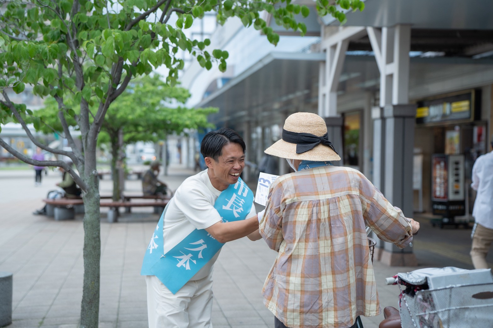
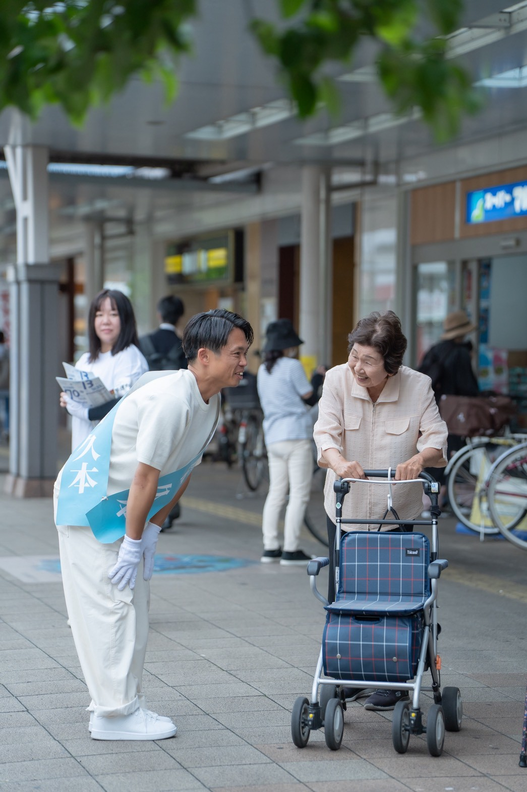
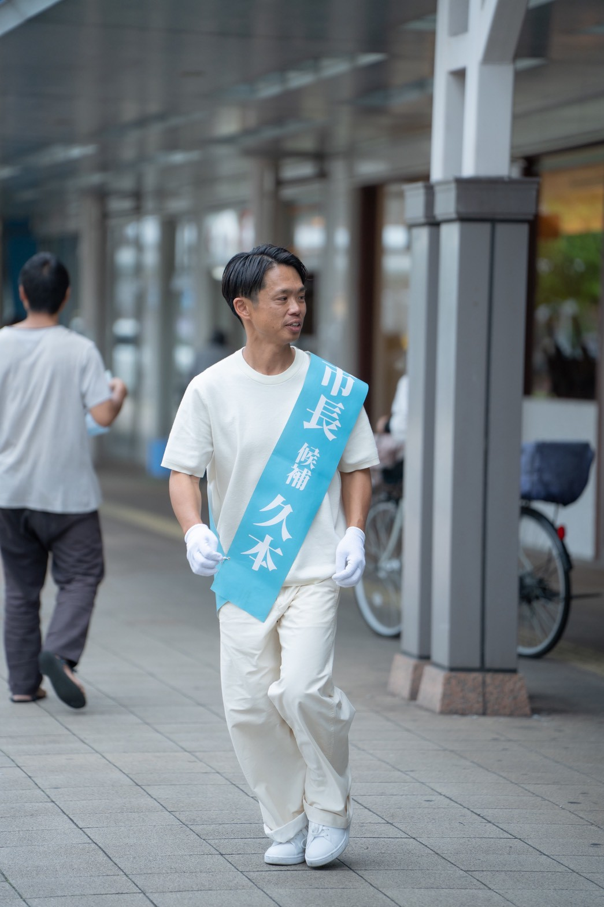
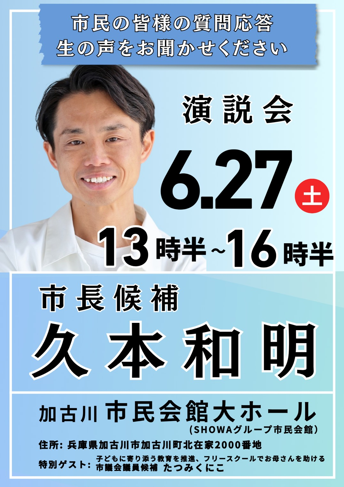

橋や道路だけじゃない。「人」を真ん中にした市政へ。
市民全員の声に、
市政がつながっていますか。
加古川では、橋や道路の建設は進んでいます。
けれど、約25万人の市民ひとりひとりの「困った」「助けて」に、
本当に届いているでしょうか。
私が掲げるのはたった一つ。「街が大家族」。
子どもも、お母さんも、お年寄りも、誰ひとり置き去りにしない。
家族なら当たり前のその想いを、まちづくりの真ん中に置きます。
仕組みやハコモノではなく、愛と情熱でつながる加古川へ。

子どもも、お母さんも、お年寄りも。誰ひとり、ひとりぼっちにしない。

私は、特別な政治家ではありません。
まちを歩き、お年寄りの杖の高さに腰をかがめ、お母さんの不安に耳を澄ます。
そこから見えてきたのは、「制度」では拾いきれない、たくさんの小さな声でした。
「家族だったら、放っておかないはずだ」
子どもに寄り添う教育を進めたい。フリースクールで、お母さんの肩の荷をおろしたい。
お年寄りが、行きたい場所へ自由に行けるまちにしたい。
その一つひとつを、私は本気で実現します。
加古川を、ひとつの大家族に。
その想いだけで、私はここに立っています。
ひと目でわかる、4つの約束

| 立候補 | 加古川市長選挙（無所属・新人） |
|---|---|
| 年齢 | 42歳 |
| スローガン | 街が大家族 ― 加古川を、ひとつの大家族に。 |
| めざす市政 | 約25万人の市民全員の声につながる、愛と情熱の市政 |
| 重点テーマ | 教育／公共交通／暮らしと挑戦／街ぐるみの子育て |

あなたの一票が、
「街が大家族」の第一歩になる。